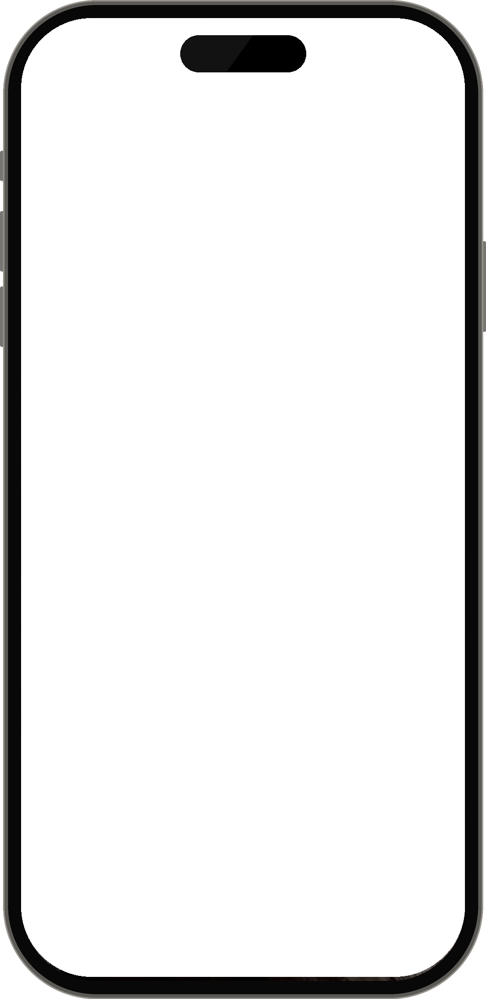
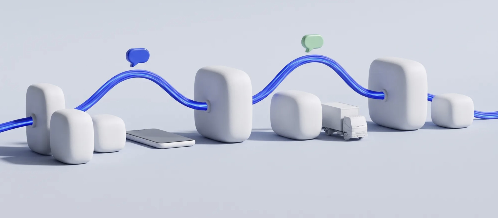

01
Weby a webové aplikácie
Moderné, rýchle a responzívne weby, interné systémy a admin rozhrania, cez ktoré si obsah spravujete sami.
- Webstránky
- Admin
- Formuláre
AI engineer a web developer, Slovensko
Som Filip Haraj. Navrhujem a staviam weby, AI chatboty a automatizácie na mieru pre slovenské firmy. Celý projekt vediem sám od prvej konzultácie po spustenie, takže hovoríte priamo s tým, kto to programuje.

Štyri typy riešení, z ktorých sa skladá väčšina mojich projektov. Často ich kombinujem: chatbot zbiera dáta, automatizácia ich spracuje a CRM ich ukáže tímu.
Moderné, rýchle a responzívne weby, interné systémy a admin rozhrania, cez ktoré si obsah spravujete sami.
Automatické spracovanie faktúr, dokumentov a e-mailov. Prepojím systémy, aby sa dáta presúvali samy, bez prepisovania.
Chatboty na WhatsApp aj na web. Kvalifikujú dopyty, zbierajú údaje a vedú zákazníka až k rezervácii.
Jedno miesto pre kontakty, obchody, faktúry a cashflow. Nastavím CRM tak, aby sedelo na váš proces, nie naopak.

Reálne nasadené systémy pre slovenské firmy a inštitúcie. Podrobnosti a ukážky rád preberiem osobne, hotové práce pravidelne zverejňujem aj na LinkedIne.
Obchod a predaj
Odpovede z webového dotazníka idú priamo do monday.com. AI vyhodnotí lead — vhodný klient si hneď vyberie termín hovoru podľa voľných kalendárov obchodníkov a dostane pozvánku na Google Meet. Po hovore sa faktúra vystaví automaticky, vrátane splátok.
Nulové riziko straty kontaktu a prehľad o každom obchode na jednom mieste.
Účtovníctvo a financie
Stovky faktúr mesačne sa prepisovali ručne. Systém ich teraz sám stiahne z Gmailu, AI vyčíta dodávateľa, sumu, splatnosť aj VS a zapíše ich do dashboardu. Podľa sumy a VS z bankových výpisov ich označí ako zaplatené.
Žiadne chyby pri prepisovaní a úplný prehľad o cashflow.
Onboarding klientov
Onboardingový bot na vlastnom čísle komunikuje prirodzenou rečou a vedie klienta k rezervácii konzultácie. Celá história chatu sa ukladá ku klientovi v CRM, bot sám zapíše e-mail a v stĺpci „status-bot“ vyhodnotí jeho záujem.
Čisté CRM, vytriedené leady a plný kalendár rezervácií.
Školstvo
Kompletne nový web školy, na ktorej študujem. Historický, no moderný a plne responzívny dizajn, zabezpečené admin rozhranie na pridávanie obsahu a AI chatbot, ktorý odpovedá na otázky a odkáže na správnu podstránku.
Škola si web spravuje sama a návštevníci nájdu odpoveď za pár sekúnd.
Proces
Jeden kontakt, jasná cena a priebežné ukážky. Viete, čo platíte a kedy to dostanete.
Krok 01
Prejdeme váš proces a nájdeme miesta, kde tím stráca čas. Zistíte, čo sa oplatí automatizovať a čo nie.
Krok 02
Dostanete technický návrh, rozpis prác a pevnú cenu. Žiadne prekvapenia na faktúre.
Krok 03
Stavím systém a priebežne ukazujem, ako vyzerá. Pripomienky zapracujem hneď, nie až na konci.
Krok 04
Nasadím, zaškolím tím a ostávam k dispozícii aj po spustení.
O mne
Spájam svet moderného webového vývoja a AI automatizácií s jediným cieľom — zbaviť firmy manuálnej práce a ušetriť im čas aj peniaze.
Hľadám miesta, kde ľudia strácajú čas rutinnými úlohami, a nahrádzam ich inteligentným softvérom. Pracujem ako freelancer z Košíc, projektovo aj dlhodobo.
Kontakt